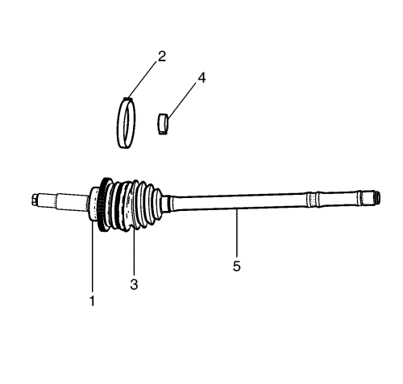
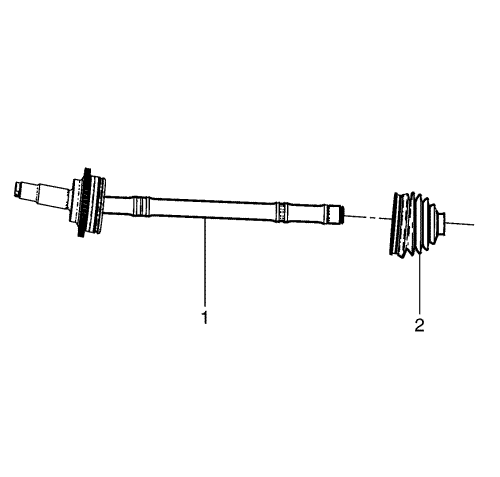
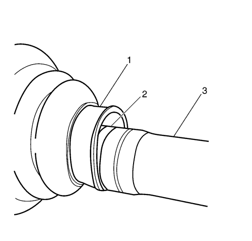
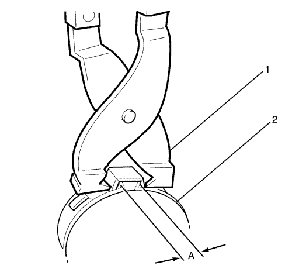
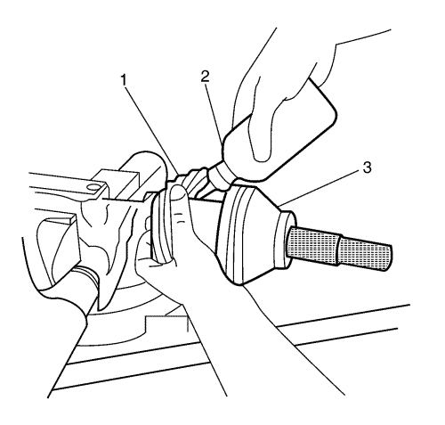

Sustitución de la articulación exterior del árbol impulsor de la rueda delantera
Herramientas especiales
DT-50185 Herramienta de montaje de la abrazadera del fuelle de la articulación exterior del árbol de accionamiento de ruedas
Nota: La articulación exterior de velocidad constante y el semieje no se pueden separar y se sustituyen como un conjunto completo.
Procedimiento de desmontaje
- Desmonte del vehículo el eje de accionamiento de la rueda. Consultar Sustitución del semieje de la rueda delantera .

- Sujete el semieje de accionamiento en un torno de mordazas blandas.
- Desmonte el fuelle de articulación interior del árbol de accionamiento de ruedas. Consultar Sustitución de junta homocinética interior de semieje de rueda delantera .

- Usando una herramienta de cabeza plana, retire la abrazadera de retención de fuelle (2) de la articulación exterior (1) y del fuelle (3). Deseche la abrazadera.
- Usando un par de cortadoras laterales, desmonte y deseche la abrazadera de retención (4) del fuelle (3) y el árbol de accionamiento de ruedas (5). Deseche la abrazadera.

- Deslice el fuelle hacia la articulación interior y desmonte el fuelle (2) del árbol de accionamiento de ruedas (1).
Procedimiento de montaje
Nota: Asegúrese de que la abrazadera de la junta está correctamente posicionada en la ranura de la junta.
- Coloque el fuelle (2) en el árbol de accionamiento de ruedas (1).

- Asegúrese de que el fuelle (1) está correctamente asentado en la ranura (2) del árbol de accionamiento de ruedas (3).

- Usando la herramienta de montaje de la abrazadera del fuelle de la articulación exterior del árbol de accionamiento de ruedas DT-50185 (1), cierre la abrazadera (2) para el árbol de accionamiento de ruedas hasta que el espacio (A) mida 2,10 mm (0,83 pulg.).

- Coloque aproximadamente la mitad del lubricante (2) en el interior del fuelle de la articulación exterior (1) y la otra mitad en la articulación exterior (3).
- Usando la herramienta de montaje de la abrazadera del fuelle de la articulación exterior del árbol de accionamiento de ruedas DT-50185 (1), cierre la abrazadera (2) para la articulación exterior hasta que el espacio (A) mida 2,10 mm (0,83 pulg.).
- Desmonte el árbol de accionamiento de ruedas del torno de banco.
- Mueva la articulación exterior de forma circular de 4 a 5 veces para distribuir el lubricante.
- Monte el árbol de accionamiento de ruedas en el vehículo. Consultar Sustitución del semieje de la rueda delantera .
| © Copyright Chevrolet Europe. All rights reserved |